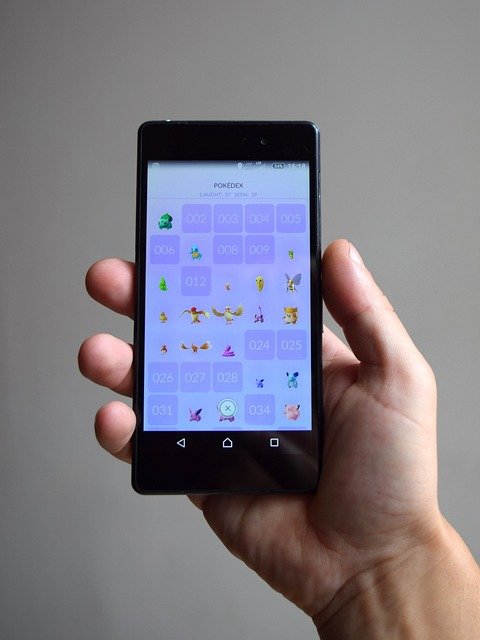
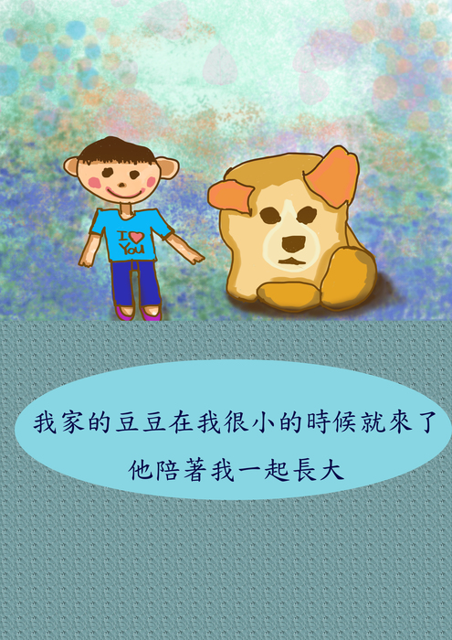
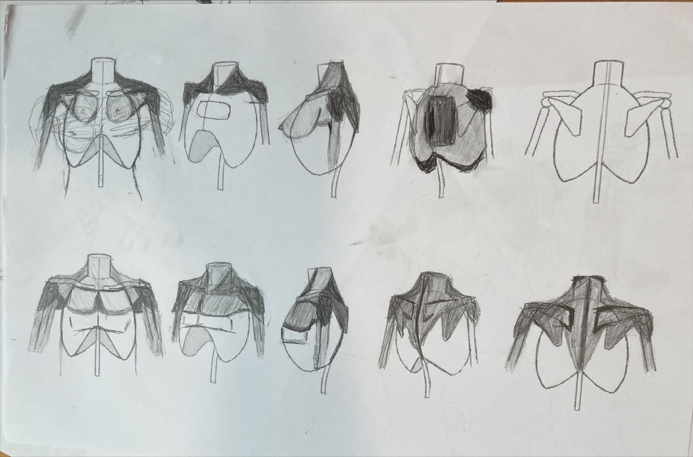

- 個性
- •我的個性:主張的是一切隨和，當遇到什麼樣的事情後都逆來順受，隨著事態的發展去解決問題。
- 個人特質
- •雖然我平常遇到不熟悉的人總是表現得沉默寡言，但是漸漸地混熟了以後我會變得比較愛講話。
- 優缺點
-
•優點: 開朗、活潑、很守規矩、老實
•缺點: 不懂得察言觀色、被動、保守
- 興趣
-

打羽球

打籃球
出遊
玩遊戲
專業技能
程式設計
前端網頁設計
後端網頁設計
平面繪圖
語言能力
Machine learning
個人經歷:
課程經歷
大一上:
大一上的時候我們的企業概論是由吳肇銘老師上課的，在這堂課程上我們每一組都必須學會要如何去學著去銷售一個產品，我們除了每周要報告及繳交心得外我們還需要去借場地擺攤以及拍一部廣告，以下是我們這組當時拍的廣告。
大一下:
大一下的時候我們的管理學是由我們系主任廖秀莉老師上課，在這堂課每個人每個組都會去分組去參考老師上課時給的志工服務單位去找他們做志工服務學習，並且每一組都要有做企劃表、規劃行程等等文件，有些人是分去教書、有人是分去賣水果、有人是去木工那，形形色色甚至都有跑到台東服務的，至於我們則是前往在中原大學的動物服務社進行志工服務並將過程錄製成影片，以下是我們這組當時服務的過程
專案經歷

我很慶幸我生在這樣一個家庭，有很多的人可以幫助我助我成長，
在我高中時我曾一時興起，就跟身為畫家的哥哥要來了一副電繪版，並在我媽媽和我哥哥的幫忙下用小畫家慢慢畫出一副圖來，
雖然確實畫的不算太好，但有這經歷後我也很感謝我身邊能有那麼多人可以幫助我
!小提示!左邊圖片也是連結。
社團經歷

我在大一的時候有去參加了學校的漫畫研習社，簡稱「漫研社」，在那邊我們主要就是學習如何去畫畫畫出一個好的漫畫，從最一開始的光影在到人的練習，再來到背景以及構圖等等，在此我挑了幾張我畫的圖片上傳到雲端給大家看。
點此前往